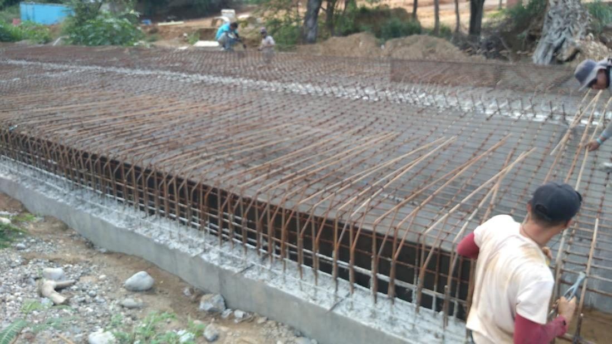
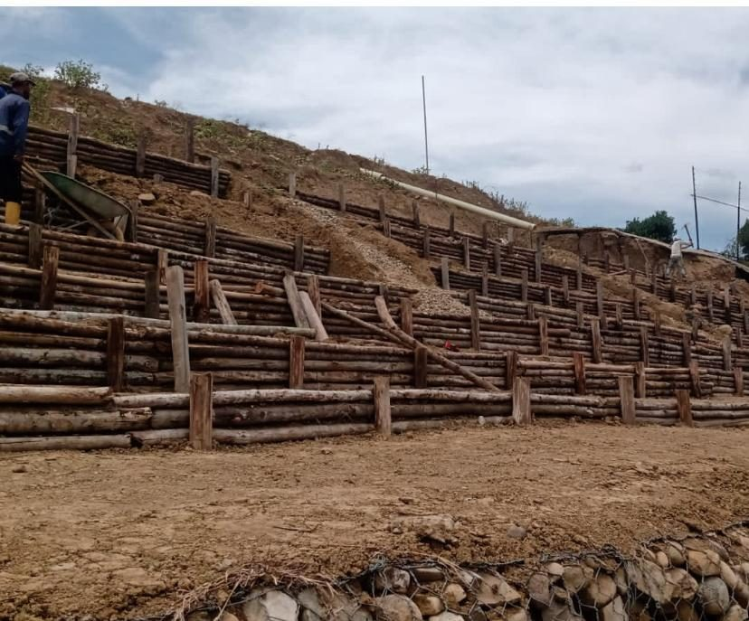
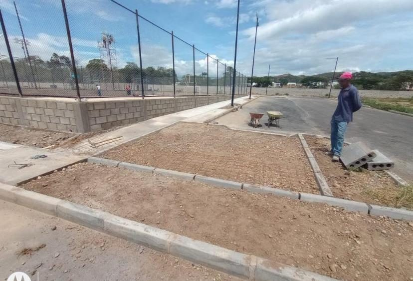
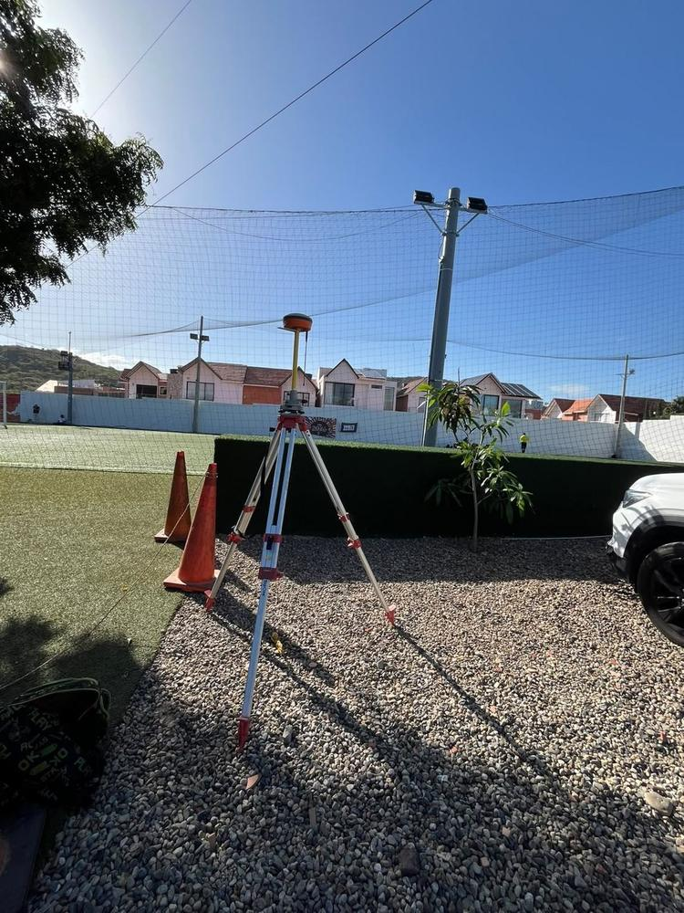
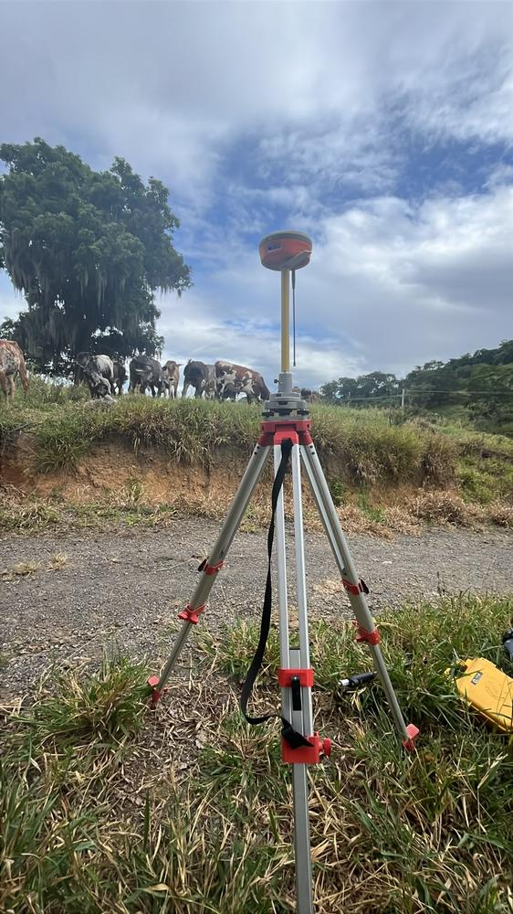
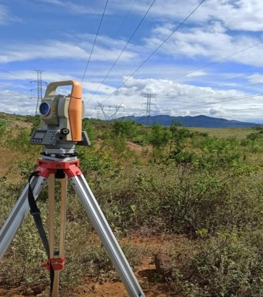
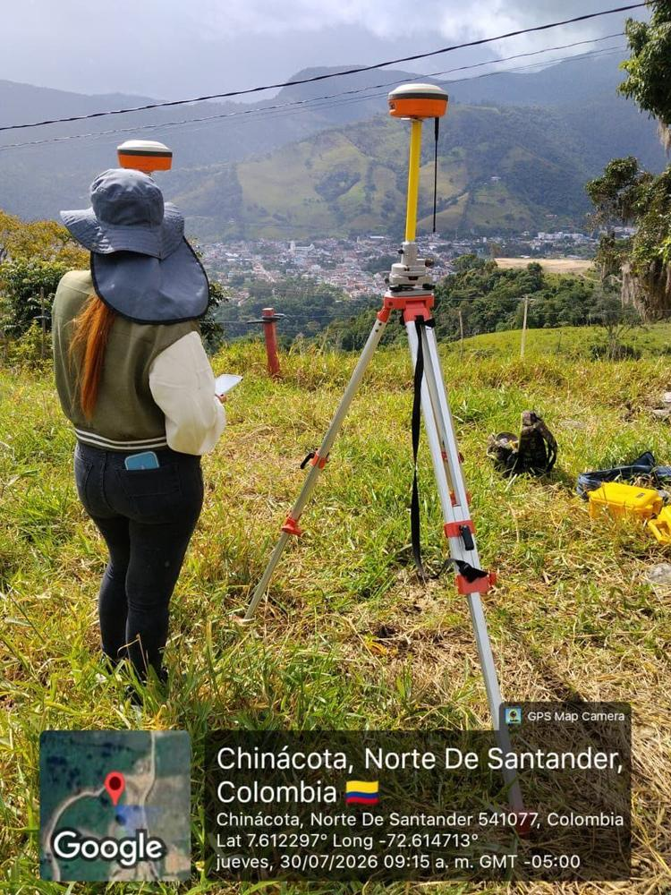
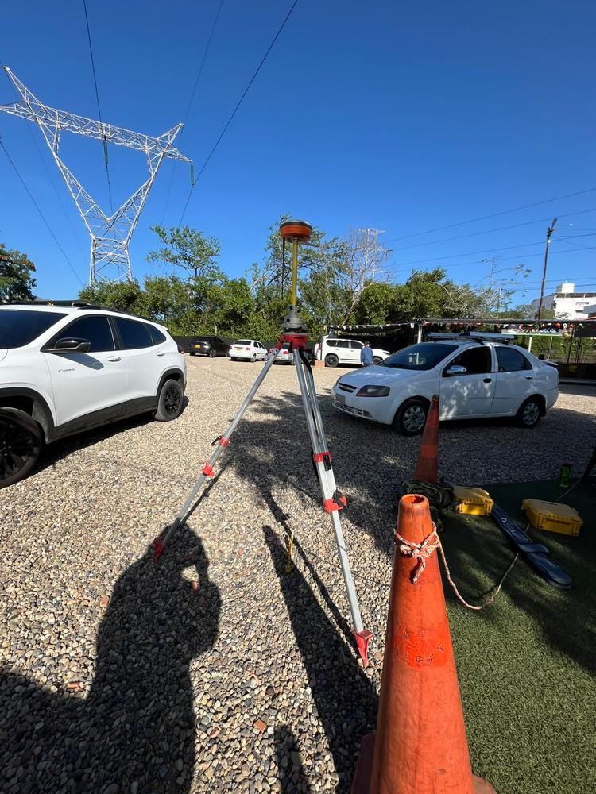

Proyectos ejecutados
Obra real, con registro fotográfico propio
Proyectos de construcción y topografía ejecutados para constructoras y urbanizadoras en Norte de Santander.
Galería
Más registro de obra y de campo
Fotografías adicionales de nuestros frentes de trabajo: estructura, urbanismo y topografía.

Estructura de concreto
Muro de contención
Urbanismo · Andenes
Topografía urbana
Topografía rural
Estación total
Equipo en campo · Chinácota
Levantamiento topográficoVideo
Videos de obra
Registro en video de nuestros frentes de trabajo activos.
Registro de obra 1
Registro de obra 2
Registro de obra 3
Registro de campo 4
¿Tiene un proyecto por ejecutar?
Empecemos por el levantamiento topográfico y dejemos el historial documentado desde el primer día.